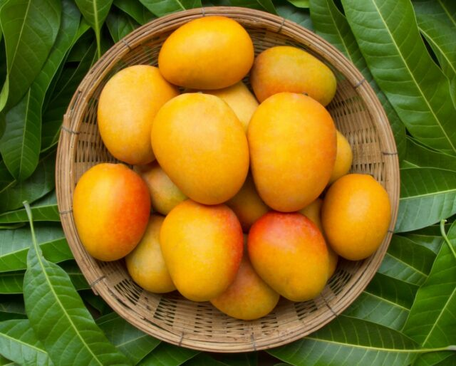

Welcome to my Store
Mango

Description: A mango is an edible stone fruit produced by the tropical tree Mangifera indica. It is believed to have originated in
the region between northwestern Myanmar, Bangladesh, and northeastern India. M. indica has been cultivated in South
and Southeast Asia since ancient times resulting in two types of modern mango cultivars: the "Indian type" and the
"Southeast Asian type". Other species in the genus Mangifera also produce edible fruits that are also called
"mangoes", the majority of which are found in the Malesian ecoregion
Banana
Description: A banana is an elongated, edible fruit – botanically a berry – produced by several kinds of large herbaceous
flowering plants in the genus Musa.In some countries, bananas used for cooking may be called "plantains",
distinguishing them from dessert bananas. The fruit is variable in size, color, and firmness, but is usually elongated
and curved, with soft flesh rich in starch covered with a rind, which may be green, yellow, red, purple, or brown when
ripe.
Grapes
Description: A grape is a fruit, botanically a berry, of the deciduous woody vines of the flowering plant genus Vitis. Grapes are a
non-climacteric type of fruit, generally occurring in clusters.
Grapes have played an important role in human nutrition, and have great cultural significance as well. The cultivation
of grapes started perhaps 8,000 years ago, in the Middle East, and the oldest known winery, in Armenia, dates to ca.
4000 BCE, and they can be eaten fresh, they can be dried (as raisins, currants and sultanas), and they can be used for
making wine, jam, juice, vinegar, oil, and other products.
Apple

Description: Apple trees are cultivated worldwide and are the most widely grown species in the genus Malus. The tree originated in
Central Asia, where its wild ancestor, Malus sieversii, is still found today. Apples have been grown for thousands of
years in Asia and Europe and were brought to North America by European colonists. Apples have religious and mythological
significance in many cultures, including Norse, Greek, and European Christian tradition.
List of Items to buy
| Item |
Quantity |
Rate |
Amount |
| Mango |
2 Kg |
200 |
400 |
| Banana |
2 Dozens |
60 |
120 |
| Apple |
2 Kg |
140 |
280 |
| Total |
|
|
800 |